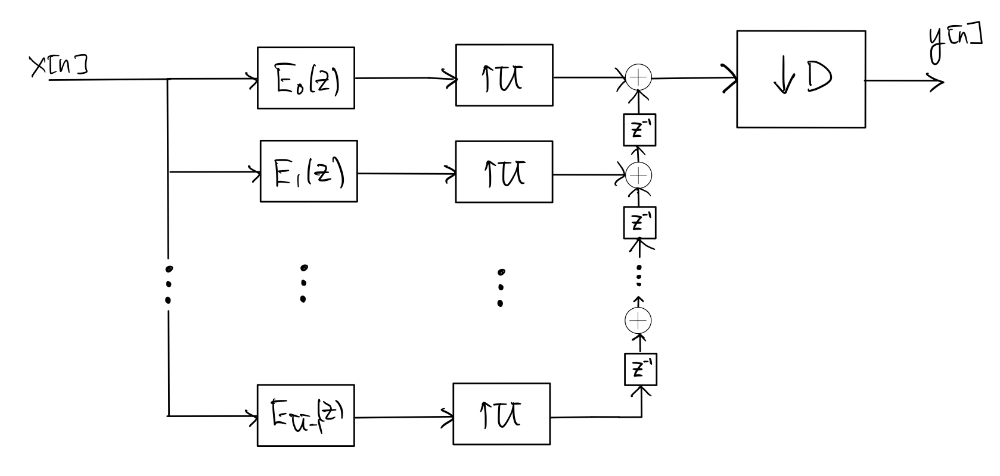
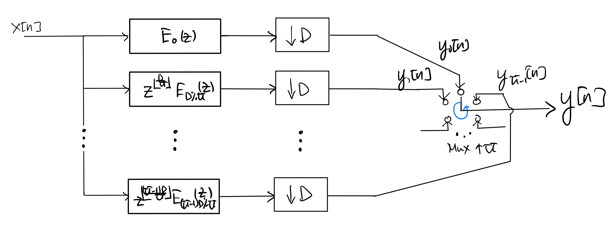
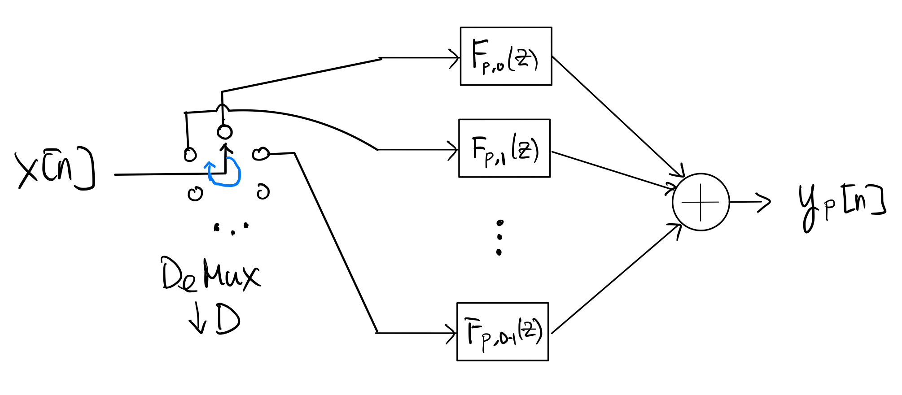
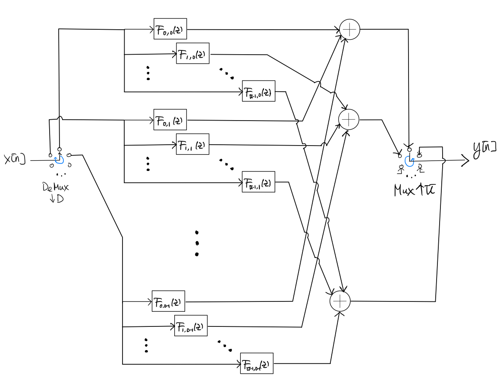

3.4. Polyphase Filtering#
For discussion simplicity and in any practical implementation, we assume below \(U\) and \(D\) are relative primes, although the algorithm described below works even when \(U\) and \(D\) are not.
3.4.1. Polyphase structure#
As shown in [1] Section 4.7.4, the multi-rate filter in Section 3.3 is equivalent to the polyphase structure below:
where, for \(p=0,1, \ldots, U-1\), the impulse response \(e_p[n]\) of the filter \(E_p(z)\) (which runs at the same rate as \(x[n]\)) is given by \(e_p[n] = h[Un+p]\), where \(h[n]\) is the impulse response fo the filter in the up-sampled domain and its length is \(L\) as discussed in Section 3.3.
It is also quite easy to see that the above polyphase structure can be redrawn in the following form, which is more conducive to implementation:
where \(\%\) is the remainder operator. Note that the circular switch (MUX) runs in the counter-clockwise direction at \(U\) times the rate of the down-samplers.
Again, as shown in [1] Section 4.7.4, the \(p\)th branch above involving polyphase filter \(z^{\left\lfloor \frac{pD}{U} \right\rfloor} E_{pD\%U}(z)\) can itself be equivalent to the following polyphase structure:
where, for \(q=0,1, \ldots, D-1\), the impulse response \(f_{p,q}[n]\) of the filter \(F_{p,q}(z)\) (which runs at \(\frac{1}{D}\) times the rate of \(x[n]\)) is given by
\[\begin{align*} f_{p,q}[n] &= e_{pD\%U} \left[Dn+q+\left\lfloor \frac{pD}{U} \right\rfloor \right] \\ & = h\left[ UDn + Uq + U \left\lfloor \frac{pD}{U} \right\rfloor + pD\%U \right] \\ & = h[UDn+Dp+Uq]. \end{align*}\]Caution
Note that some of impulse responses \(f_{p,q}[n]\)’s may be non-causal.
Also, it is easy to check that the length of each \(f_{p,q}[n]\) is at most \(\left\lceil \frac{L}{UD} \right\rceil+1\)
Putting the polyphase implementations of all branches back to the second polyphase structure, we obtain the following overall polyphase implementation of the multi-rate filter:
where the circular DEMUX runs in the clockwise direction at the rate of \(x[n]\) and the circular MUX runs in the counter-clockwise direction at \(U\) times the rate of the polyphase filter outputs.
{kind=link}
{kind=link}
{kind=link}
{kind=link}
3.4.2. Time-domain polyphase implementation#
Clearly, the polyphase structure is more suitable for parallel implementation. In addition, we can also get computational complexity advantage using the polyphase structure. Let’s start by considering the computational complexity when each filter in the polyphase structure above is implemented by doing direct time-domain (linear) convolution.
Let \(N\) and \(L\) denote the lengths of \(x[n]\) and \(h[n]\), respectively.
Caution
Be careful that \(x[n]\) and \(h[n]\) have different rates. The rate of \(h[n]\) is \(U\) times that of \(x[n]\) because of up-sampling.
As before, we will assume \(NU \gg L \gg UD\).
We have already worked out in Section 3.3 that the number of multiplications needed per input sample in the direct multi-rate time-domain implementation is \(\mathcal{O}\left(\frac{UL}{D} \right)\).
For the time-domain polyphase implementation, the length of each polyphase filter \(F_{p,q}(z)\) is \(\mathcal{O}\left(\frac{L}{UD}\right)\). Since the length of the input to each such filter is \(\mathcal{O}\left(\frac{N}{D} \right)\), the length of the output from each such filter is \(\mathcal{O}\left(\frac{N}{D}\right)\). To calculate each such output sample, we need to do \(\mathcal{O}\left(\frac{L}{UD}\right)\) multiplications. Remember that there are \(UD\) such polyphase filters. Hence, the total number of multiplications needed to compute the whole \(y[n]\) is \(\mathcal{O}\left(\frac{NL}{D}\right)\), and hence the number of multiplications needed per input sample is \(\mathcal{O}\left(\frac{L}{D}\right)\).
In summary, the time-domain polyphase implementation saves by a factor of \(U\) in computational complexity, compared with the direct time-domain multi-rate implementation.
3.4.3. Frequency-domain polyphase implementation#
Frequency-domain polyphase filtering is a bit trickier. Consider a frequency-domain implementation of the overall polyphase structure shown above, based on the overlap-save algorithm. As discussed in Section 3.2, we divide the batch of samples of the input signal \(x[n]\) into overlapping blocks of length \(D\, 2^m\), where \(2^m\) is the FFT size. Similar to Section 3.2, the last \(DM\) output samples of the inverse FFT give valid linear convolution results that we will “save” for each block. Also as before, the amount of overlap between adjacent input blocks is then \(D(2^m-M)\). The choices of \(m\) and \(M\) will be determined later.
Now, consider a block of \(D\,2^m\) samples of the input signal \(x[n]\). We may obtain the multi-rate filtered samples of the output signal \(y[n]\) for this block by implementing the following steps:
Demultiplex (\(\downarrow\! D\)) \(x[n] \) into \(x_q[n] = x[nD-q]\) for \(q=0,1,\ldots,D-1\).
For \(q=0,1,\ldots,D-1\), calculate the \(2^m\)-point FFT \(X_k^{(q)}\) of \(x_q[n]\).
For \(p=0,1,\ldots,U-1\), calculate
\[\begin{equation*} Y_k^{(p)} = \sum_{q=0}^{D-1} F_k^{(p,q)} X_k^{(q)} \end{equation*}\]where \(F_k^{(p,q)}\) is the \(2^m\)-point FFT of the impulse response \(f_{p,q}[n]\).
For \(p=0,1,\ldots,U-1\), calculate the \(2^m\)-point inverse FFT \(y_p[n]\) of \(Y_k^{(p)}\).
For \(p=0,1,\ldots,U-1\), “save” the last \(M\) samples of \(y_p[n]\) to get \(\tilde y_p[n]\).
Multiplex (\(\uparrow\! U\)) \(\tilde y_0[n], \tilde y_1[n], \ldots, \tilde y_{U-1}[n]\) into the output signal \(y[n]\), i.e. \(y[n U + p] = \tilde y_p[n]\).
Finally, we simply concatenate all output blocks together to get the whole output signal \(y[n]\).
It remains to choose the FFT size \(2^m\) and \(M\). As mentioned above, the length of each polyphase filter \(F_{p,q}(z)\) is at most \(\left\lceil \frac{L}{UD} \right\rceil+1\). Hence, we would want to choose \(M = 2^m- \left\lceil \frac{L}{UD} \right\rceil\) and \(m\) such that \(m \ll \frac{L}{UD} \ll 2^m\) in order to obtain computational advantage by using the overlap-save algorithm.
To study the computational complexity of the polyphase overlap-save algorithm above, let us assume that all \(F_k^{(p,q)}\)’s are pre-calculated and stored. To process a block of \(DM\) input samples of \(x[n]\), we need:
in step 2 above calculates \(D \ 2^m\)-point FFTs and hence requires \(\mathcal{O}(D m 2^m)\) multiplications,
in step 3 above calculates \(U\!D \ 2^m\)-point multiplications and hence requires \(\mathcal{O}(UD2^m)\) multiplications, and
in step 4 above calculates \(U \ 2^m\)-point inverse FFTs and hence requires \(\mathcal{O}(U m 2^m)\) multiplications.
As a result, the number of multiplications needed per input sample is \(\mathcal{O}\left( \max\left\{U, m, \frac{Um}{D} \right\} \right)\) since \(\frac{L}{UD} \ll 2^m\). In conclusion, as long as we have \(m \max(U,D) \ll L\), we will get significant advantage in computational complexity using the frequency-domain polyphase implementation over using the time-domain polyphase implementation.
Comparing this frequency-domain polyphase implementation with the direct frequency-domain multi-rate implementation discussed in Section 3.3 is trickier since the choices of the the FFT sizes in the two implementations are different. Let the FFT size used in the direct multi-rate implementation be \(2^{m'}\). Recall that from the discussion in Section 3.3 we should choose \(m'D \ll L\ll 2^{m'}\) and the number of multiplications needed per input sample is \(\mathcal{O}(m' U)\). On the other hand, we choose (see above) the FFT size \(2^m\) in the polyphase implementation to satisfy \(m \ll \frac{L}{UD} \ll 2^m\). In order to see whether the frequency-domain polyphase implementation gives any advantage in computational complexity, we must relate the choices of \(m\) and \(m'\):
One may choose \(m' = \frac{\max(U,D)}{D} \cdot m\) to get similar computational complexity advantages over time-domain calculation in both the direct multi-rate and polyphase implementations. Thus, expressed in terms of \(m\), the number of multiplications needed per input sample for the direct multi-rate implementation is \(\mathcal{O}\left(\frac{mU}{D} \max(U,D)\right)\). Hence, the number of multiplications needed per input sample by the frequency-domain polyphase implementation is \(\min\left( \frac{m}{D}, \frac{U}{D}, 1 \right) \cdot \max(U,D)\) times smaller than that by the frequency-domain direct multi-rate implementation.
Another possibility is to choose \(m' = m + \log_2 (UD)\) to obtain the same percentage of discarded samples in the overlap-save algorithms in both the polyphase and direct multi-rate implementations. Assuming \(m \gg \log_2 (UD)\), the number of multiplications needed per input sample by the frequency-domain polyphase implementation is \(\min\left( m, U, D \right)\) times smaller than that by the frequency-domain direct multi-rate implementation.
The
FilterPolyphaseclass infilters.cppprovides an example of implementing the frequency-domain polyphase filter described above. Note that the second approach of choosing the FFT size is employed inFilterPolyphase.For a usage example of
FilterPolyphase, seetest_filter.cpp.